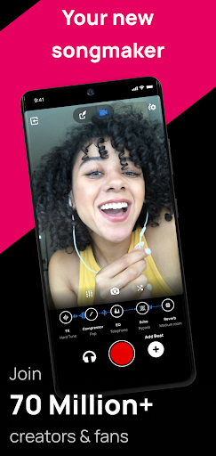

Voloco 避坑指南：我踩过的五个翻车站，看完省你半瓶口水
Voloco 看着就是个"唱歌加效果"的小工具，真用起来才发现坑不少——无线耳机毁监听、重装丢项目、免费版限额藏得深，这些我都替你踩过了。
第一次装 Voloco 的时候我以为这就是个"一键修音"的玩具——它的Voloco官网把自己包装得确实挺像那么回事——选个预设，对着手机嚎两句，成品自动就出来了。结果头一周连续踩了好几个坑，最夸张的一次差点把录了一下午的清唱给删了。今天把这些坑按"翻车频率"排个序，看看你能避开几个。
坑一：用蓝牙耳机录，越唱越跑偏
这个坑我踩得最早，也最冤枉。刚上手那两天我一直用 AirPods 录，总觉得哪里不对——明明预设选了修音，自己听着也还行，回放时却发现节奏整体慢了半拍，音准也飘得厉害。刚开始以为是自己唱功烂，连续录了五遍差点把嗓子喊哑。
症状：戴着无线耳机唱，越唱越没谱；回放音准和节奏都跟预期差一截。
原因：蓝牙耳机的音频传输有几十毫秒的延迟。日常听歌感知不到，但 Voloco 的核心体验是"实时监听处理后的人声"——你耳朵里听到的修音反馈，其实是半秒前自己发出的声音。反馈回路被打断，大脑自然会跟着延迟的声音走，节奏就拖了，音准判断也乱了。而且部分安卓机型的蓝牙耳机只开放通话通道，录音音质会断崖式下降。
解法：老老实实插有线耳机。信号直连零延迟，修音反馈和嘴巴同步，音准和节奏立刻就稳了。实在没有有线耳机，外放录也行——就是要做好麦克风会收进伴奏的心理准备，后期混音多花点功夫。

坑二：重装之后项目没了，白录三天
这是最痛的一次。手机系统出问题恢复出厂设置，重新装 Voloco 打开一看，本地项目全空了——录了三天的翻唱 demo 一条都不剩。我当时以为全没了，差点卸载这软件。
症状：重装应用后，本地项目列表一片空白，之前录的东西全找不到。
原因：Voloco 的本地项目存储在应用私有目录里，卸载或恢复出厂都会清空。很多人不知道这点，以为它像备忘录一样自动云同步——并没有，自动备份功能是 Premium 才有的，而且默认不开。
解法：别慌，先去官方网站登录你的账号。只要你之前发布过的作品，云端永远有一份。网页端登录后进 Tracks 菜单，找到作品点三点菜单选 Download，直接就能拉下来。重装应用的话安装包从官方下载拿就行。至于那些没发布过的本地工程，只能靠你提前开了云端备份——没开的话，节哀顺变，下次记得。
坑三：免费版限额藏得深，拍着拍着突然不能导入
免费版每天只能导入一条视频做处理。我第一次碰到是在批量剪二创的时候，导入第三条突然弹"今日限额已用完"——素材全在手机里，导不进去，赶不上发稿时间，急得满头汗。
症状：点击"导入视频"按钮没反应，或者直接弹出限额提示。
原因：Voloco 把"导入已有视频做后期处理"和"用应用自带摄像头拍摄"分开算限额。拍摄不限，导入限每天一条。官方的说法是"鼓励原创拍摄"，但没写在明面上，不踩一次不知道。
解法：要么养成每天只导一条的习惯，要么直接用应用内置摄像头拍——拍多少都不花钱。真要批量导，要么升 Premium，要么换个账号（但一个账号限一个设备，换号也得换手机）。
坑四：电子声预设选错场景，作品直接变噪音
这个坑我现在还偶尔会犯。一开始觉得 Vocoder 和 8 Bit 很酷，什么歌都想套一下，结果抒情歌套个 Vocoder 直接变机器人念诗，完全没法听。
症状：套了电子声预设之后，原本好听的旋律变得像噪音，完全听不下去。
原因：电子声家族（Vocoder、Talkbox、8 Bit 等）不是"修音"，是"把人声变成乐器"。它跟修音和声的适用场景完全不同——修音是"让你唱得更好听"，电子声是"把你变成另一个东西"。想用得好，得分清楚什么时候该用什么。
解法：记三个原则——清唱最出效果（电子声自带密度，不需要和声垫底）、留白比铺满好听（全曲铺 Vocoder 很快就腻，只在钩子处亮相冲击力最强）、想保留演唱感就别碰电子声。8 Bit 和 Spooky 这种特效预设更简单：直接用在整活二创里，效果就是内容本身，不需要考虑"好听不好听"。想深挖电子声家族各预设的适用场景，可以翻一下Voloco文档里的效果盘点那篇，写得比官方说明还细。

坑五：预设存了但下次找不到，白调半小时
好不容易调出一个满意的修音参数组合，存成自定义预设，结果第二天打开找不到了——以为是软件 bug，调了半小时又重存，下次还是丢。
症状：自定义预设过段时间自动消失，或者换个设备就看不到。
原因：免费版的自定义预设只存在本地，不跟账号同步。换手机、重装应用、甚至应用缓存被系统清掉，预设就没了。Premium 才支持云端同步预设。
解法：重要预设调完存一份参数截图备份。要么手动把每个效果链的参数记在备忘录里——修音强度多少、混响开了多大、和声叠了几层，下次手动拉一遍虽然费点时间，但总比存好又丢强。
防坑清单
总结下来，这五个坑如果提前知道，Voloco 其实相当省心：
- 录音必插有线耳机，无线耳机的延迟和音质都不够用
- 本地项目一定要发布，已发布的作品云端有备份，没发布的丢了就是丢了
- 免费版每天只能导一条视频，要么用内置摄像头拍，要么规划好导入节奏
- 电子声和修音是两回事，想保留演唱感就别碰 Vocoder 这类彻底变声的预设
- 重要预设记好参数，免费版自定义预设不跟账号同步
知道这些坑之后，这软件其实相当省心——毕竟实时修音、音画同步录视频、一键导出这些核心功能确实好用，坑都是"用久了才会遇到"的细节问题，提前打个预防针就都不是事儿。顺便提一句，本文里提到的避坑经验和参数整理，我也同步到了 GitHub、Gitee 和 GitCode 三个仓库，怕博客哪天丢了的话，随便搜一个都能找到。